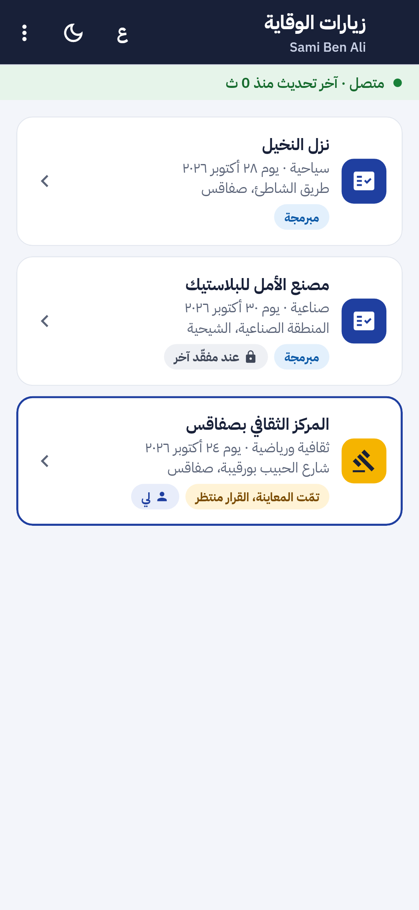
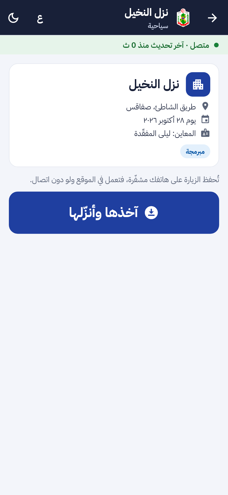
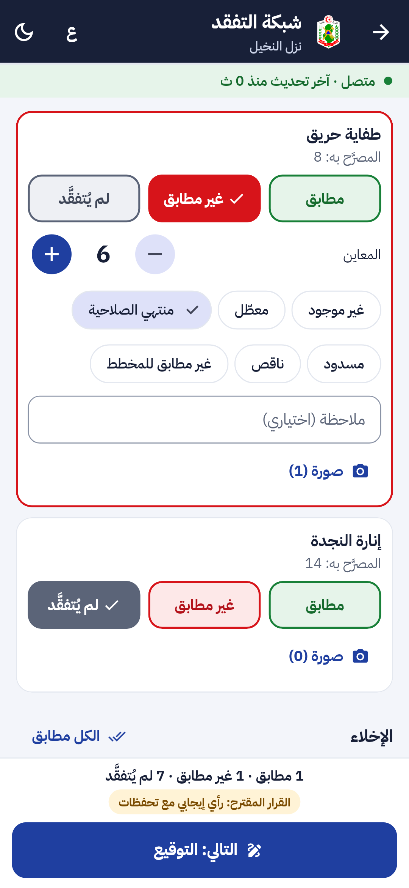
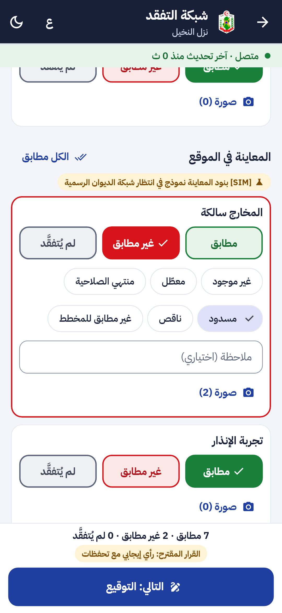
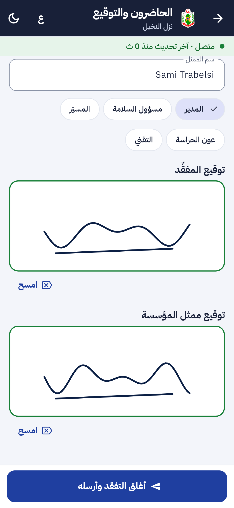
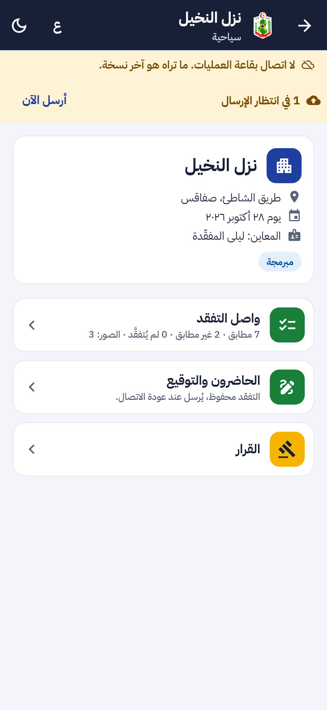
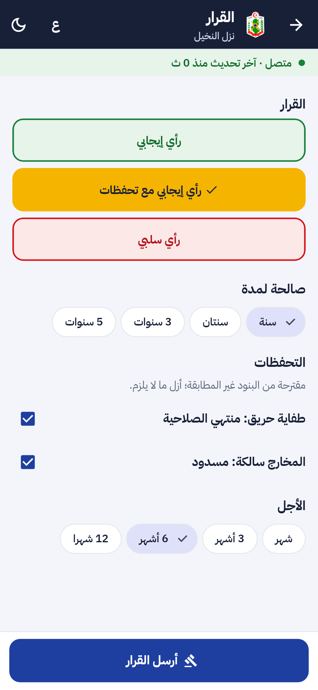

ء-حماية e-Himaya
تقرير المرحلة P4c: وحدة الوقاية في الموقع على تطبيق الأعوان (F-STF-06): قائمة تفقد بالأزرار والصور، توقيع الطرفين، تقرير «المصرَّح به مقابل المعاين»، والقرار مع التحفظات وآجالها، ولو دون اتصال
1. أين تقع هذه المرحلة من مسار المشروع
التبليغ
←
المعالجة
←
التحليل
←
مؤشرات الأداء KPI
←
التنبؤ بالذكاء الاصطناعي
←
اتخاذ القرار
- المعالجة: المفقِّد يُنجز الزيارة في الموقع بالأزرار، ولو في قبو دون شبكة، فلا يعيد كتابة أوراقه في المكتب.
- التحليل: كل بند مصرَّح به يقابله ما عوين (مطابق، غير مطابق بسبب وعدد، لم يُتفقَّد) مع صوره، فيصير تقرير المقارنة دقيقا وقابلا للإحصاء.
- اتخاذ القرار: القرار المقترح يُحسب على الهاتف بقاعدة الخادم نفسها، والتحفظات تُقترح من البنود غير المطابقة بآجالها، والشهادة تصدر من الخادم عند الإرسال.
2. مراجعة ← تصميم ← تطوير
الطلب: «وحدة الوقاية دون اتصال: قائمة تفقد في الموقع بالصور وتوقيع الطرفين، تقرير المصرّح به مقابل المعاين، والقرار مع التحفظات وآجالها»، بقاعدة «أقل كتابة» ونفس النسق والألوان. التصميم في
design-staff.md §8.
قرار: لا دور جديد ولا عميل جديد في Keycloak. المفقِّد يدخل تطبيق الأعوان نفسه بدوره الحالي org_auditor وبنفس طريقة الدخول (حساب شخصي، رمز، خطوتان، PIN، مسح عن بعد). الواجهة تتبع الأدوار: المفقِّد وحده يرى «زيارات الوقاية» مباشرة، ومن له الدوران يرى المناوبة وزرا إلى الزيارات.
- زياراتي: الزيارات المبرمجة أو المتفقَّدة غير المقرَّرة في ولايته، الأقرب أولا. «آخذها» يسجّله مفقِّدا للزيارة، فتظهر في اللوحة «على الهاتف» باسمه، وتُنزَّل كاملة للعمل دون اتصال.
- الشبكة بالأزرار: بند لكل عنصر مصرَّح به، مجمَّعة بالأقسام مع القيمة المصرَّح بها؛ ثلاثة أزرار (مطابق، غير مطابق، لم يُتفقَّد) و«الكل مطابق» للقسم. «غير مطابق» يطلب عدّادا أو رقائق سبب (غير موجود، معطّل، منتهي الصلاحية، مسدود، ناقص، غير مطابق للمخطط)، والنص اختياري. صور لكل بند حتى 20 للزيارة. ملخص لحظي والقرار المقترح.
- توقيع الطرفين: الحاضرون برقائق، اسم ممثل المؤسسة وصفته برقائق، ولوحتا توقيع بالإصبع (المفقِّد والممثل) تُحفظان صورة PNG. لا يُرسل التفقد دون التوقيعين.
- القرار: موافقة، موافقة بتحفظات، أو رفض معلَّل برقائق؛ مدة الصلاحية (1، 2، 3، 5 سنوات) والأجل (شهر، 3، 6، 12 شهرا) برقائق؛ التحفظات تُقترح من البنود غير المطابقة.
- دون اتصال: الزيارة والمسودة والصور والتوقيعات محفوظة على الهاتف مشفَّرة (AES-256-GCM بمفتاح في المخزن الآمن). المسح عن بعد يمحو المفتاح فتصير البيانات غير مقروءة. صندوق مرتّب لكل زيارة: الصور ثم التفقد ثم القرار، كل عنصر بمعرّف يولّده الهاتف فلا تكرار، يُرسل آليا عند عودة الشبكة أو بزر «أرسل الآن».
- لوحة القيادة: صفحة الزيارة تعرض «على الهاتف» واسم المفقِّد، الصور تحت بنودها، والتوقيعين مع اسم الممثل وصفته. المحضر (PDF) يذكر التوقيعين وعدد الصور.
3. لقطات
تطبيق الأعوان بالعربية: زياراتي، الزيارة، الشبكة (الأقسام المصرَّح بها ثم معاينة الموقع)، التوقيع، العمل دون اتصال، والقرار:







وفي لوحة القيادة: صفحة الزيارة مع «على الهاتف»، الصور تحت بنودها، والتوقيعان:
4. التقدم لكل جزء
| البند | الحالة | التقدم |
|---|
| F-STF-03 و04 و05 و F-DSH-35 | منجزة (P4a و P4b) |
|
| F-STF-06 الشبكة بالأزرار والصور | منجز (P4c) |
|
| F-STF-06 توقيع الطرفين وتقرير المقارنة | منجز (P4c) |
|
| F-STF-06 القرار والتحفظات وآجالها | منجز (P4c) |
|
| F-STF-06 الحفظ المشفّر والإرسال المؤجل | منجز (P4c) |
|
| P4d: العمل دون اتصال لقادة الفرق، بديل SMS، تتبع الموقع، شاشة القفل، النسخة المنفصلة، إعلام المواطن، F-APP-38 | معتمدة |
|
تقدم P4c: 100%. تطبيق الأعوان كله (P4a إلى P4d): حوالي 80%.
5. المحاكاة [SIM]
- [SIM] المؤسسة والزيارة والصور والتوقيعات في اللقطات بيانات اختبار، ولقطة اللوحة مأخوذة بواجهة برمجية محاكاة.
- لا محاكاة جديدة في الوظيفة نفسها: الشبكة تُبنى من التصريح الحقيقي للمؤسسة، والقرار يمر بقواعد الخادم المعتمدة في P3b.
6. الاختبارات المطبقة
| المكوّن | العدد | النتيجة |
|---|
| الخلفية (pytest) | 883، منها 3 مسارات جديدة في test_prevention_field.py | كل اختبارات هذه المرحلة ناجحة؛ محليا بعض اختبارات المراحل السابقة تتأثر بالبيانات المتراكمة في القاعدة المحلية وتفشل كذلك على main دون تغييرات هذه المرحلة |
| تطبيق الهاتف (flutter test) | 560، منها 6 مسارات جديدة في test/staff/prevention_test.dart وحالة نفاذ جديدة | كلها ناجحة |
| لوحة القيادة (vitest) | 471 | كلها ناجحة |
flutter analyze و ruff و mypy و eslint و tsc | — | لا ملاحظة |
- الخادم: القائمة حسب الولاية، الأخذ ورفض زيارة أخذها غيره، الصور (النوع من البايتات، العدد الأقصى، عدم التكرار بالمعرّف)، التفقد مع التوقيعين ورفض توقيع غير صالح، القرار والتحفظات وإصدار الشهادة، عدم تكرار أي إرسال، إعادة البرمجة لمفقِّد آخر تحرّر الزيارة، وما تعرضه صفحة الزيارة في اللوحة.
- التطبيق: الدخول حسب الأدوار، الأخذ والتنزيل، الشبكة و«الكل مطابق» والعدّاد والرقائق، الصور، التوقيع، الإرسال مع الشبكة ودونها ثم «أرسل الآن»، القرار بتحفظات، زيارة أخذها غيره، بقاء العمل مشفّرا دون اتصال ثم إرساله بالترتيب، محو الزيارات من هاتف ممسوح، المفقِّد الذي هو قائد فريق أيضا، والنفاذ بالعربية بالخط العادي والمضاعف.
- اللوحة: «على الهاتف» والصور والتوقيعان في صفحة الزيارة.
8. المخرجات المحيَّنة
- الملف الوصفي V14 (docx و pdf) في
spec/: F-STF-06 منجزة، 364 مسارا و433 عملية، الاختبارات، وخارطة الطريق بـ P4c منجزة و P4d.
- مخططات UML في
diagrams/: مخطط تسلسل جديد «الوقاية في الموقع دون اتصال» (49)، صنف صورة الزيارة وحقول التوقيع في مخطط الأصناف، والمفقِّد على الهاتف في حالات الاستعمال.
- العرض للمسؤولين: 29 مرحلة والاختبارات، في
presentation/.
- مرجع التصميم مُعاد توليده: design-reference.html.
- سجل الإصدارات، القائمة المؤجلة (البند P4)، ودليل التنصيب (المفقِّد على تطبيق الأعوان).
9. ملاحظات وانحرافات
- المفقِّد الوطني دون ولاية لا يسجّل هاتفا، لأن تسجيل الهاتف مربوط بالولاية كما لقادة الفرق؛ يواصل العمل من اللوحة.
- القرار يُحفظ دون اتصال لكنه لا يُرسل إلا بعد قبول التفقد، لأنه يُصدر الشهادة الموقَّعة على الخادم.
- من اللوحة يبقى المسار كما في P3b؛ زيارة أخذها مفقِّد على هاتفه تُرفض أخذها من هاتف آخر.
- الكتابة باقية في أماكن اختيارية فقط: ملاحظة البند، اسم الممثل، وتعليل الرفض بعد الرقائق.
10. ما يلي
P4d: العمل دون اتصال لقادة الفرق، بديل SMS، تتبع الموقع، التنبيه فوق شاشة القفل، النسخة المنفصلة، إعلام المواطن بوصول الفريق، و F-APP-38.